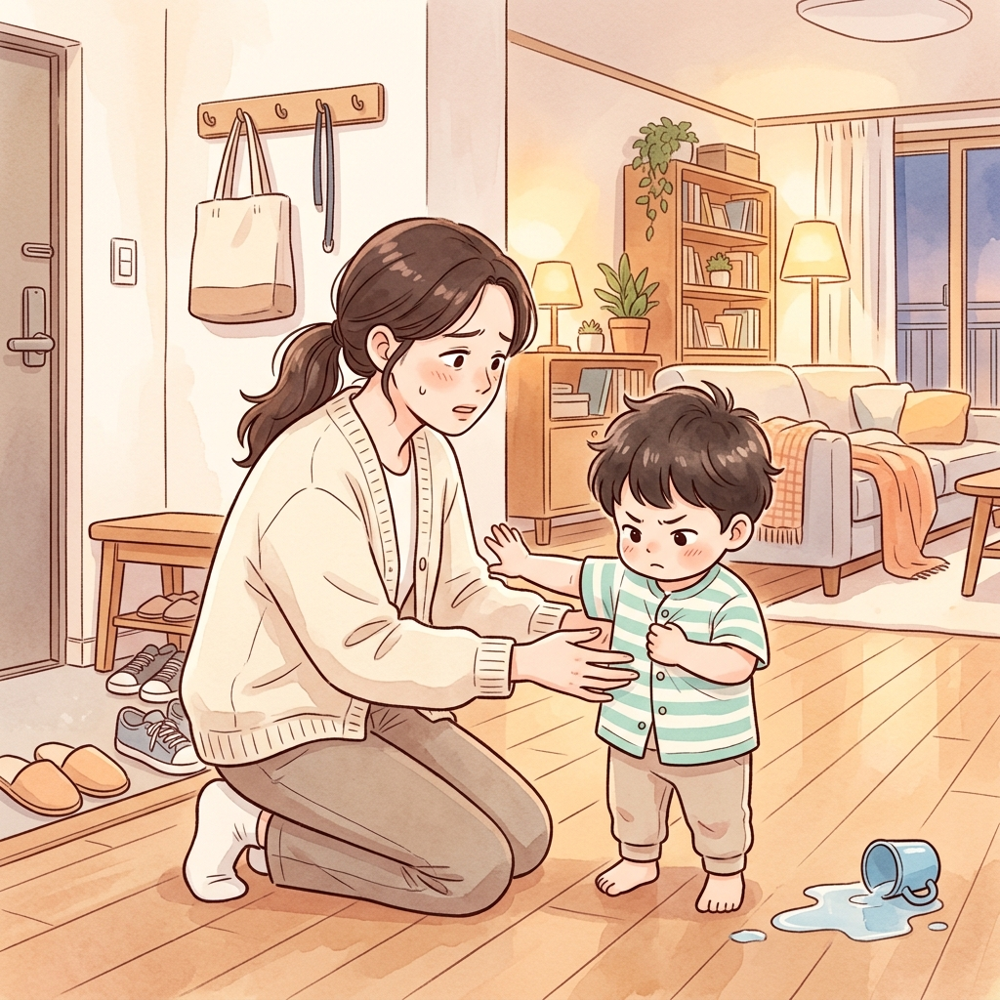
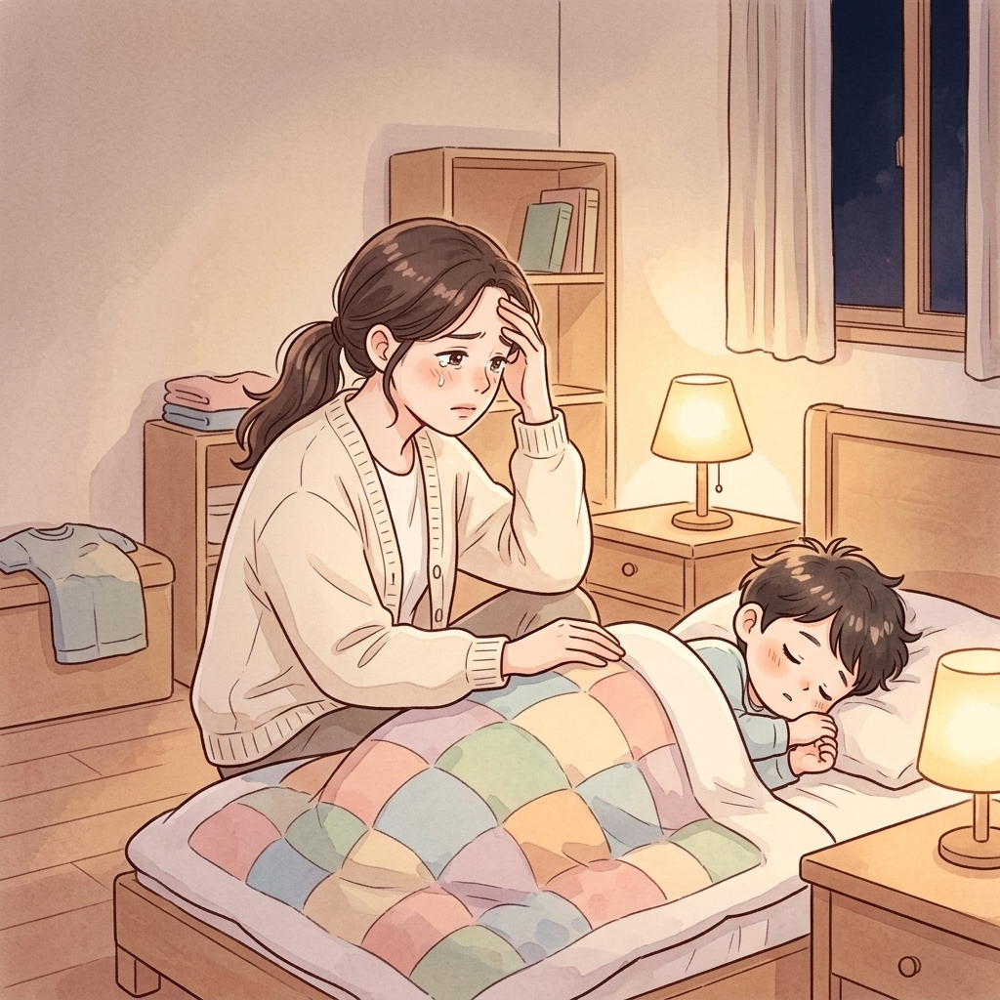
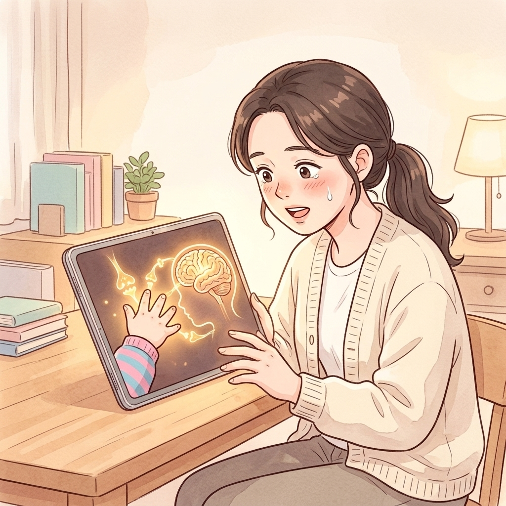
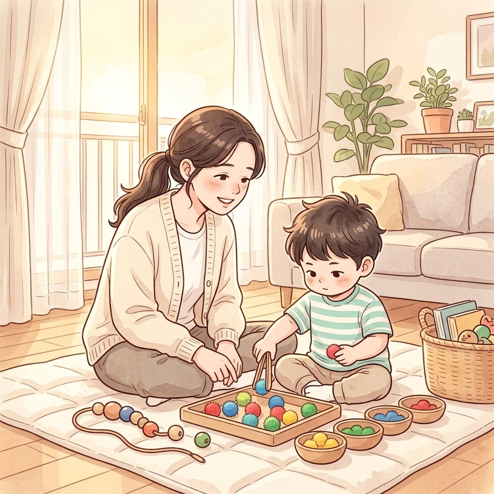
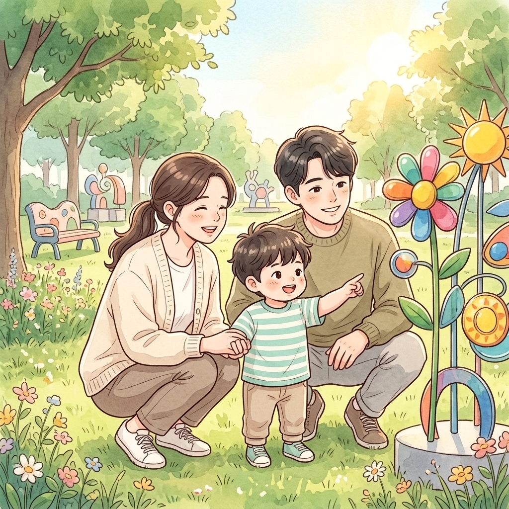
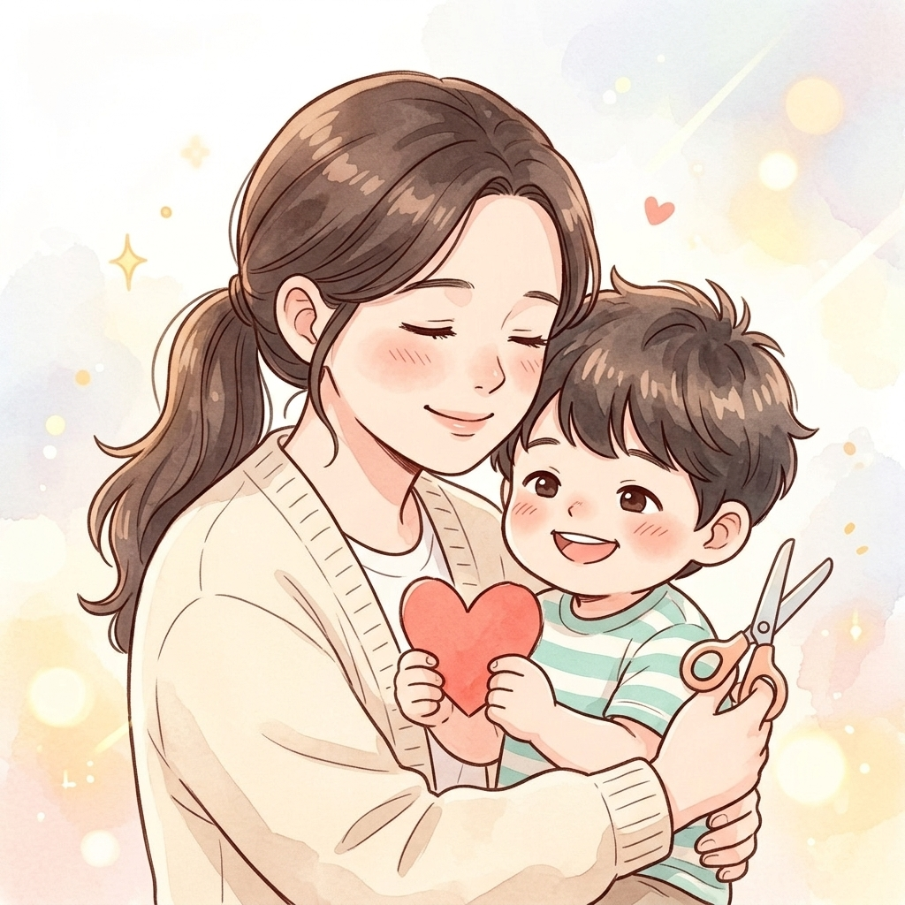

아래 버튼으로 Google Flow(flow.google.com)를 열고, 6컷 원화와 프롬프트를 넣어 2~3초 모션 클립을 생성하거나 바로 완성된 2.5D 모션 영상을 재생하세요.

d:\사업아이템\samples\2_webtoon_sample\raw\cut_01.jpg
d:\사업아이템\samples\2_webtoon_sample\raw\cut_02.jpg
d:\사업아이템\samples\2_webtoon_sample\raw\cut_03.jpg
d:\사업아이템\samples\2_webtoon_sample\raw\cut_04.jpg
d:\사업아이템\samples\2_webtoon_sample\raw\cut_05.jpg
d:\사업아이템\samples\2_webtoon_sample\raw\cut_06.jpg